Overview
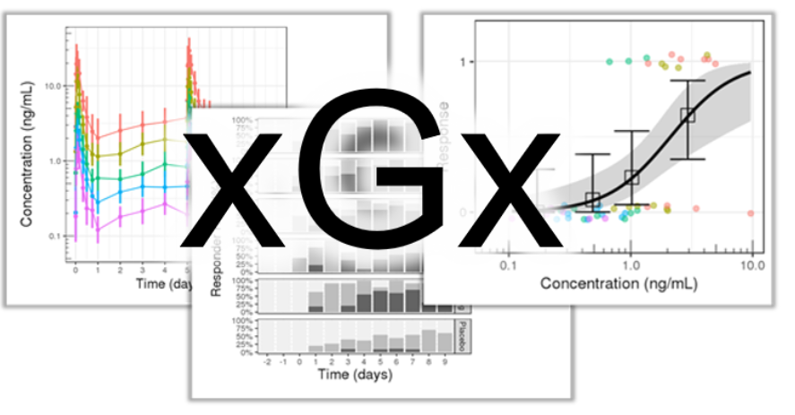
xGx/xGxr: Tools for the exploration of PKPD datasets.
Exploratory graphics provide a quick visual solution to check your data for any anomalies and give the user a simple overview of the data structure. This is particularly helpful in PKPD analysis as a step prior to making more complex models.
The open source packages xgx and xgxr are targeted specifically towards exploratory graphics of PKPD analyses, with a focus to improve efficiency, code readability, exploratory graphic consistency, and act as an educational resource for PKPD analyses.
What types of questions can we answer with exploratory graphics for PKPD?
Pharmokinetic Relevant Questions
Longitudinal trends
- How many compartments are observed within the data?
- Is the clearance nonlinear?
- (e.g. Is there a discontinuity / drop in elimination phase in log space?)
These question may be addressed in PK data by plotting the mean and confidence intervals over time, grouped by does or assigned treatment.
- Logarithmic scaling helps identify the number of compartments, linearity of elimination, and better general plot visualizations.
- Linear scaling allows better attention towards the \(C_{max}\), which can be important if there is a narrow therapeutic window and if \(C_{max}\) is important in determining safety.
An example of a PK plot used to answer these question is given in our PK - Multiple Ascending Dose template:

Dosage trends
- PK linearity - Is dose-normalized AUC or \(C_{max}\) consistent across dosages? (This provides information regarding how dosage adjustments affect response)
If the normalized concentration across doses is observed to increase with increasing dosages, this may indicate a nonlinear clearance.
Conversely, if the lowest dosage is associated with a larger and more variable normalized concentration, this may be an indication that the signal to noise ratio is low - i.e. the data is close to the lower limit of detection.
An example of the type of plot which is helpful to answer these questions is given in our PK - Single Ascending Dose template:

Pharmacodynamic Relevant Questions
Questions relevant to the pharmacodynamics of a study are dependent upon the PD data type (e.g. continuous, binary, or ordinal)
Longitudinal trends
- How quickly is a steady state reached?
Dosage trends
- Is the PD response, efficacy, or safety a function of dose?
- Is the dosage large enough to reach an asymptote?
- What is the \(E_{max}\) or \(ED_{50}\)?
An example of the type of plot which is helpful to answer these questions is given in our PD, Dose-Response - Binary Response template:

Questions about Sources of Variablility
Inter-subject variability
Between-subject variability can be easily visualized as a spaghetti plot, as we have shown in our Single Ascending Dose PK template
Single_Ascending_Dose_PK.html#explore_covariate_effects_on_pk 
Intra-subject variability
Within-subject variability is most simply viewed as a spaghetti plot, that has been faceted by the individual, such as the one shown below:

Explained vs Unexplained Variability
- Explained variability
- Between-subject:
- Traditional covariates
- Within-subject:
- Circadian rhythms, seasonal effects, food effects, disease progression
- Between-subject:
- Explained variability
- Between-subject:
- Unaccounted for covariates
- Within-subject:
- Residual error, poor absorption, other unaccounted for effects
- Between-subject:
Data Checking
Dataset
The plots presented here are based on the “Multiple_Ascending_Dose_Dataset2” simulated data within our github repository. It has been pre-processed with the steps provided in the Orindal PKPD template ‘Load Dataset’ section.
Overview of number of patients
Overview of number of patients at each dose
patient.summary = pkpd_data_wide %>%
distinct(ID, .keep_all=TRUE) %>%
group_by(DOSE) %>%
count() %>%
arrange(-DOSE)
DT::datatable(patient.summary)pk.summary = pkpd_data_wide %>%
filter(CMT==2) %>%
group_by(DOSE) %>%
count() %>%
arrange(-DOSE)
DT::datatable(pk.summary)Checking the data consistency of observations
Plotting observations against ID can give a quick overview of the range of values that the observations take on. You can use this plot to check that observed values are consistent with what you expect. You can also check for any outliers or trends. For the example multiple ascending dose PKPD dataset, there are several different datatypes defined by different compartments. Let’s plot LIDV vs ID for CMT 2 through 6 to see what range of values LIDV takes on for these different CMT.
## For this example we will subset to ID and LIDV, exploring different values for CMT
for(icmt in seq(2,6)){
data_to_plot <- pkpd_data_wide %>% dplyr::filter(CMT==icmt) %>% dplyr::select(ID, LIDV) ;
gg <- ggplot(data_to_plot, aes(y=ID, x = LIDV))
gg <- gg + geom_point(alpha=0.5)
gg <- gg + xlab(paste0("LIDV[CMT==",icmt,"]"))
gg1 <- gg
gg2 <- gg + xgx_scale_x_log10()
grid.arrange(gg1,gg2,ncol=2)
}## Error in .f(.x[[i]], ...): object 'LIDV' not foundBy doing a simple ID checkout you can see that CMT = 2 and 3 represent continuous variables, while CMT = 4, 5 and 6 take on more restricted values. You can tell that CMT 4, 5 and 6 are not concentration but represent some other type of variable. Let’s checkout the descriptions for each compartment, and see if our conclusions about the observation values make sense.
DT::datatable(unique(pkpd_data_wide[order(my.data$CMT),c("CMT","NAME")]), rownames=FALSE)## Error in order(my.data$CMT): object 'my.data' not foundChecking timing of doses and observations
Swimmer plot with ID vs Time of Event (e.g. Observation, Dose, Inferred Dose)
The following plot displays observation and dosing events for each individual. This can be helpful in determining the ordering of events. For example, ensuring that trough concentrations occur prior to dosing. This plot also gives a nice overview of the subject visits, and if there are any subjects who dropped out before the end of the trial. For the example PKPD dataset, you can tell that this is a simulated dataset by the uniform spacing of dosing and observation events, and the lack of dropouts.
data_to_plot <- pkpd_data_wide
data_to_plot$EVID = factor(data_to_plot$EVID, levels = c(0,1))
gg <- ggplot(data_to_plot, aes(x=TIME, y = ID))
gg <- gg + geom_point(aes(shape=EVID, color = EVID))
gg <- gg + geom_line(linetype="dashed", aes(group=ID), color = "grey")
gg <- gg + scale_shape_manual(values=c(1,3))
gg <- gg + scale_color_manual(values=c(rgb(0.75,0.25,0.25),rgb(0.25,0.25,0.75)))
gg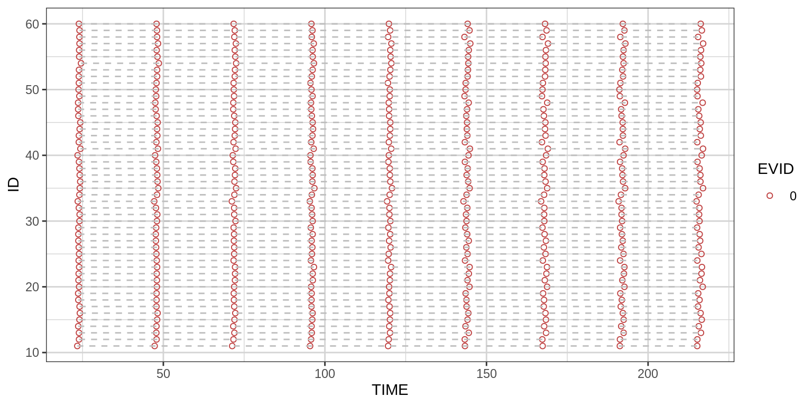 ### Nominal time vs Actual time In this case, time is in units of hours and so there is no more than one hour difference between actual and nominal time. But if there is a large difference, there could be an error in how the actual time is calculated.
my.data = pkpd_data_wide %>%
mutate(DIFF = TIME-NOMTIME)
g = ggplot(my.data,aes(x=TIME,y=DIFF))
g = g + geom_point()
g = g + labs(x="Actual Time",
y="Difference between Actual and Nominal Time")
print(g)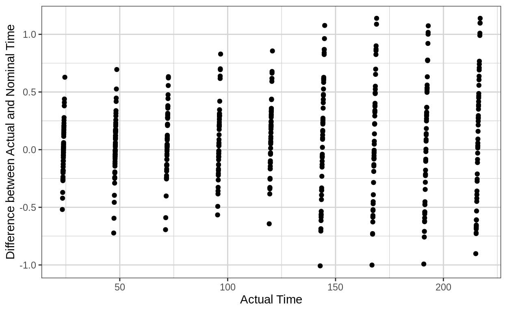 #### Dot plot, ID vs Time between dose to first observation Plotting the ID vs time between dose and first observation can be informative to see if there are any surprises between the dose and the next observation. The complicated part about this plot is to efficiently generate the time between doses and observations. It would be easy with a for loop, but for loops are terribly inefficient in R. As a hack, you can use Rcpp to generate a highly efficient way to use for loops. The “Data.cpp” file contains the function dataEdaGen to create a list of 3 datasets: - time between doses (II) - time between dose and next observation (DO) - time between dose and last observation (OD)
This also assumes that all of your events are unrolled, that is: - No steady state doses - ADDL/II doses are expanded and added to the dataset.
Functions
Tabulation
- xgx_check_data()
- provides summary tables to check your data
- xgx_summarize_covariates()
- summarizes covariate information
Plots and Themes
- xgx_theme()
- Sets the global theme to the Novartis xGx theme for plots
- xgx_xgx_plot()
- Constructs a plot with the Novartis xGx theme
Confidence Intervals and Smooths
- xgx_geom_ci()
- plot mean & confidence intervals under different distribution assumptions (binomial, normal, lognormal, etc.)
- xgx_geom_pi()
- plot median & percentile intervals
Scaling
- xgx_scale_y_log10()
- change y axis to log10 scale, niceley spaced major & minor gridlines
- xgx_scale_x_time_units()
- convert time units for plotting
- xgx_scale_y_reverselog10()
- scale y axis nicely for receptor occupancy data, increases resolution around 100%
- xgx_scale_y_percentchange_log10()
- scale y axis nicely for percent change data, increases resolution around -100%
Saving and Annotation
- xgx_annotate_status()
- Add a draft status watermark
- xgx_annotate_filenames()
- Add metadata to the bottom of a figure
- xgx_save()
- save figures with status and metadata watermarks
- xgx_save_table()
- saves table to csv, with source metadata
Functions - Examples
In this first example, we will walk you through a few code snippets displaying the use of xGx functions.
Confidence intervals
The code for confidence intervals is a bit complex and hard to remember.
Rather than copy-pasting this code we provide the function xgx_stat_ci for calculating and plotting default confidence intervals and also xgx_geom_pi for percentile intervals.
xgx_stat_ci allows the definition of multiple geom options in one function call, defined through a list. The default is geom = list("point","line","errorbar").
Binning non-discretized x axis with xgx_stat_ci()
# Example of binned x values by quantile
gg <- xgx_plot(pkpd_data_wide,
aes(x = CONC, response = ORDINAL_LEVELS, color = ORDINAL_LEVELS))
gg <- gg + xgx_stat_ci(bins = 6, distribution = "ordinal")
print(gg)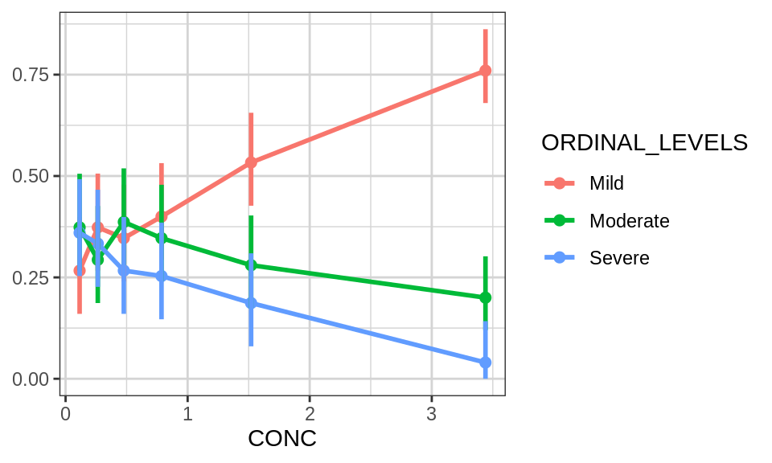
Binning with custom (non-quantile) breaks parameter
# Example of binned x values by quantile
gg <- xgx_plot(pkpd_data_wide,
aes(x = CONC, response = ORDINAL_LEVELS))
gg <- gg + xgx_stat_ci(breaks = c(0.1, 0.2, 0.5, 1, 3), distribution = "ordinal")
print(gg)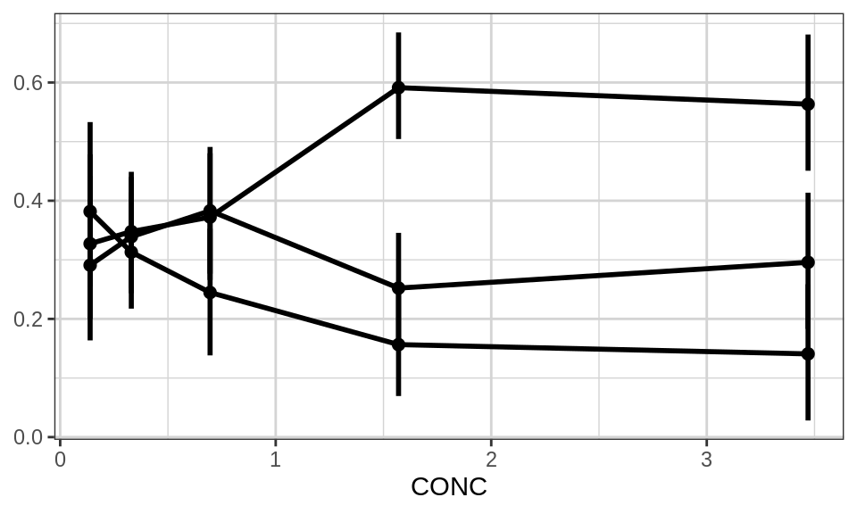
The default settings calculate the confidence interval based on the Student t Distribution (assuming normally distributed data). You can also specify “lognormal”“,”binomial"" or “multinomial”" for the distribution. The first will perform the confidence interval operation on the log-scaled data, the second uses the binomial exact confidence interval calculation from the binom package, and the third uses MultinomCI from the DescTools package.
Note: you DO NOT need to use both distribution = "lognormal" and scale_y_log10(), choose only one of these.
# plotting lognormally distributed data
data <- data.frame(x = rep(c(1, 2, 3), each = 20),
y = 10^(rep(c(1, 2, 3), each = 20) + stats::rnorm(60)),
group = rep(1:3, 20))
xgx_plot(data, aes(x = x, y = y)) +
xgx_stat_ci(conf_level = 0.95, distribution = "lognormal")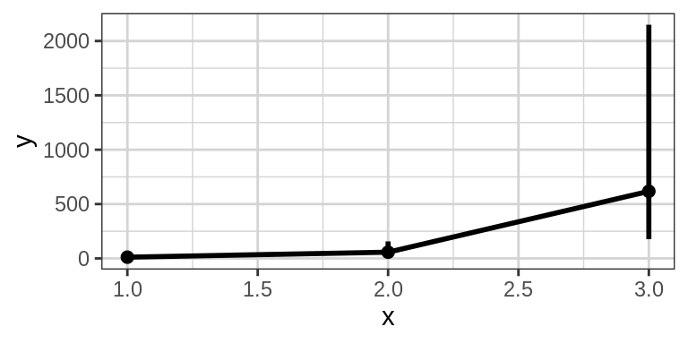
# note: you DO NOT need to use both distribution = "lognormal" and scale_y_log10()
xgx_plot(data,aes(x = x, y = y)) +
xgx_stat_ci(conf_level = 0.95) + xgx_scale_y_log10()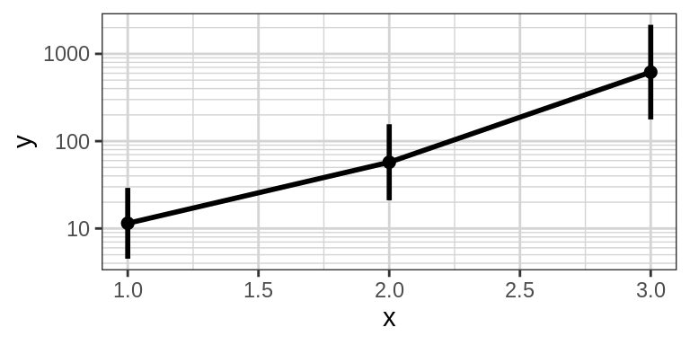
# plotting binomial data
data <- data.frame(x = rep(c(1, 2, 3), each = 20),
y = rbinom(60, 1, rep(c(0.2, 0.6, 0.8), each = 20)),
group = rep(1:3, 20))
xgx_plot(data, aes(x = x, y = y)) +
xgx_stat_ci(conf_level = 0.95, distribution = "binomial")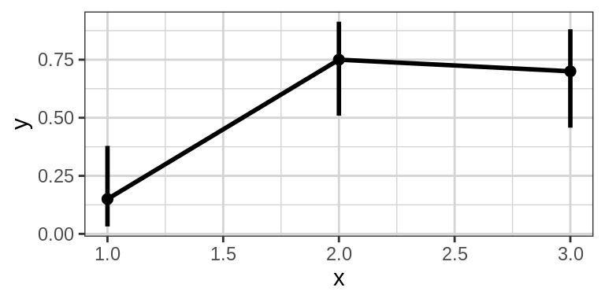
# Example plotting the percent of subjects in a categorical covariate group by treatment.
set.seed(12345)
data = data.frame(x = 120*exp(rnorm(100,0,1)),
response = sample(c("Trt1", "Trt2", "Trt3"), 100, replace = TRUE),
covariate = factor(sample(c("White","Black","Asian","Other"), 100, replace = TRUE),
levels = c("White", "Black", "Asian", "Other")))
xgx_plot(data = data) +
xgx_stat_ci(mapping = aes(x = response, response = covariate),
distribution = "ordinal") +
xgx_stat_ci(mapping = aes(x = 1, response = covariate), geom = "hline",
distribution = "ordinal") +
scale_y_continuous(labels = scales::percent_format()) +
facet_wrap(~covariate) +
xlab("Treatment group") + ylab("Percent of subjects by category")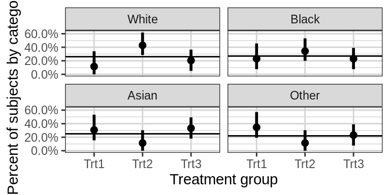
xgx_stat_ci can now also cut data by quantiles of x using the bins option, e.g. bins = 4 will cut the data by quartiles of x. You can also supply your own breaks to cut the data.
# plotting
set.seed(12345)
data = data.frame(x = 120*exp(rnorm(100,0,1)),
response = sample(c("Mild","Moderate","Severe"), 100, replace = TRUE),
covariate = sample(c("Male","Female"), 100, replace = TRUE)) %>%
mutate(y = (50 + 20*x/(200 + x))*exp(rnorm(100, 0, 0.3)))
# plotting a lognormally distributed variable by quartiles of x
xgx_plot(data = data) +
xgx_stat_ci(mapping = aes(x = x, y = y, colour = covariate),
distribution = "lognormal", bins = 4)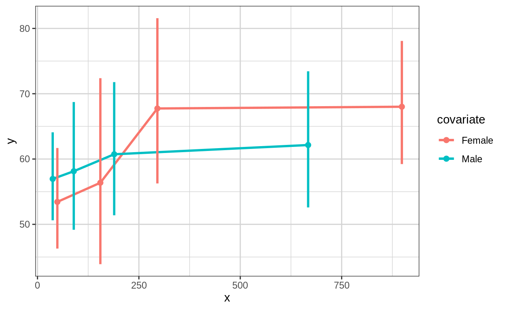
# plotting ordinal or multinomial data, by quartiles of x
xgx_plot(data = data) +
xgx_stat_ci(mapping = aes(x = x, response = response, colour = covariate),
distribution = "ordinal", bins = 4) +
scale_y_continuous(labels = scales::percent_format()) + facet_wrap(~response)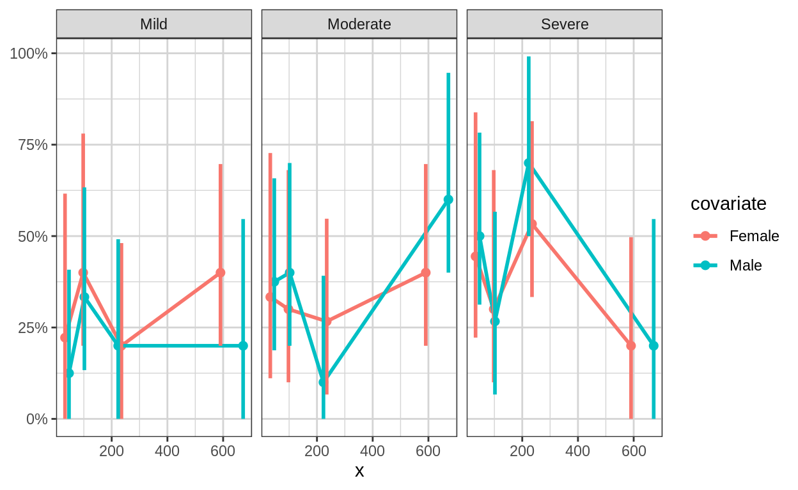
xgx_plot(data = data) +
xgx_stat_ci(mapping = aes(x = x, response = response, colour = response),
distribution = "ordinal", bins = 4) +
scale_y_continuous(labels = scales::percent_format()) + facet_wrap(~covariate)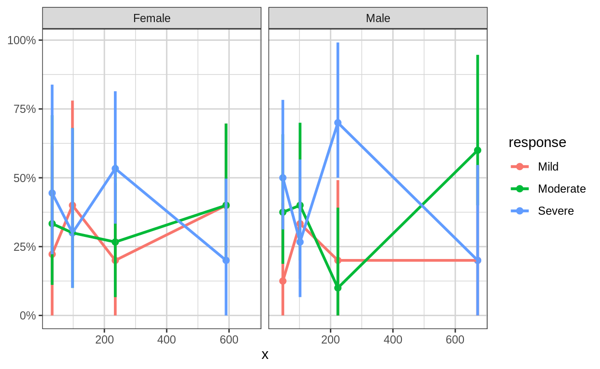
Nonlinear smoothing (e.g. Emax)
The current ggplot2::geom_smooth does not allow for plotting confidence bands for method = “nls”, as ggplot2 does not supply a predictdf for an object of class nls, which geom_smooth silently calls to calculate the ymin and ymax for the confidence bands. The xgxr package includes a definition of predictdf.nls, allowing for confidence bands for method = “nls”. xgxr also includes an Emax smooth function called xgx_geom_smooth_emax which utilizes the “nlsLM” method, and silently calls the predictdf.nls defined by xgxr.
set.seed(123456)
Nsubj <- 10
Doses <- c(0, 25, 50, 100, 200)
Ntot <- Nsubj*length(Doses)
times <- c(0,14,30,60,90)
dat1 <- data.frame(ID = 1:(Ntot),
DOSE = rep(Doses, Nsubj),
E0 = 50*rlnorm(Ntot, 0, 0.3),
Emax = 100*rlnorm(Ntot, 0, 0.3),
ED50 = 50*rlnorm(Ntot, 0, 0.3)) %>%
dplyr::mutate(Response = (E0 + Emax*DOSE/(DOSE + ED50))*rlnorm(Ntot, 0, 0.3) ) %>%
merge(data.frame(ID = rep(1:(Ntot), each = length(times)), Time = times), by = "ID")
gg <- ggplot(data = dat1, aes(x = DOSE, y = Response))
gg <- gg + geom_point()
gg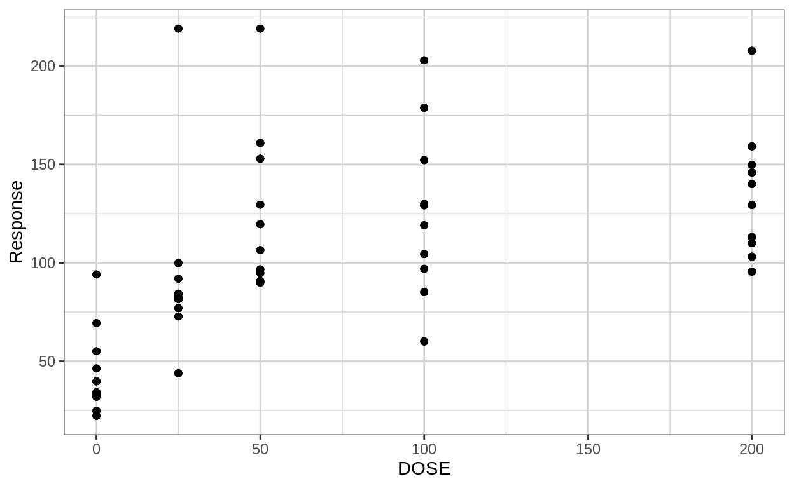
gg + geom_smooth(method = "nlsLM",
formula = y ~ E0 + Emax*x/(ED50 + x),
method.args = list(start = list(E0 = 1, ED50 = 1, Emax = 1),
lower = c(-Inf, 0, -Inf)))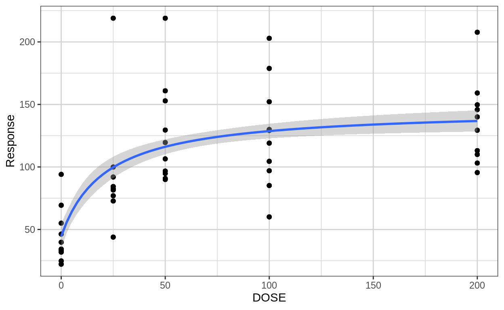
gg + xgx_geom_smooth_emax()gg +
xgx_geom_smooth_emax(geom = "ribbon", color = "black", fill = NA, linetype = "dashed") +
xgx_geom_smooth_emax(geom = "line", color = "red")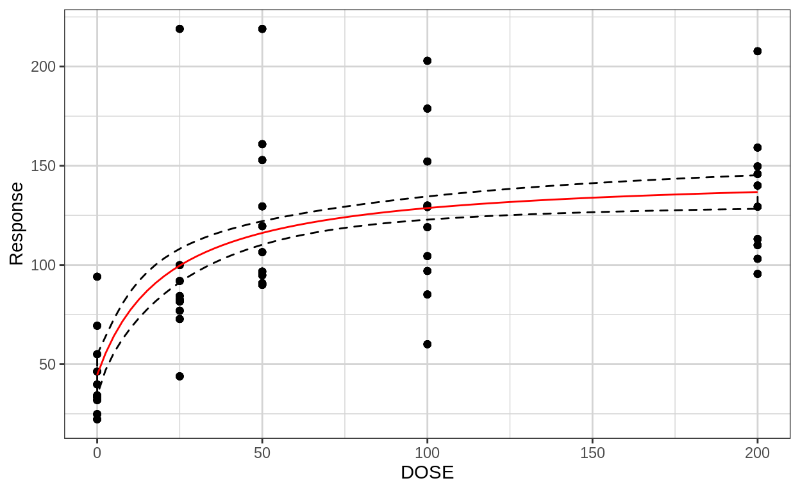
Nice log scale
This version of the log scale function shows the tick marks between the major breaks (i.e. at 1, 2, 3, … 10, instead of just 1 and 10). It also uses \[10^x\] notation when the labels are base 10 and are very small or very large (<.001 or >9999)
df <- data.frame(x = c(0, stats::rlnorm(1000, 0, 1)),
y = c(0, stats::rlnorm(1000, 0, 3)))
xgx_plot(data = df, aes(x = x, y = y)) +
geom_point() +
xgx_scale_x_log10() +
xgx_scale_y_log10()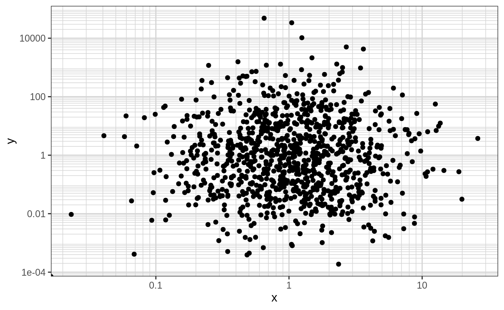
Reverse log transform
This transform is useful for plotting data on a percentage scale that can approach 100% (such as receptor occupancy data).
conc <- 10^(seq(-3, 3, by = 0.1))
ec50 <- 1
data <- data.frame(concentration = conc,
bound_receptor = 1 * conc / (conc + ec50))
gy <- xgx_plot(data, aes(x = concentration, y = bound_receptor)) +
geom_point() +
geom_line() +
xgx_scale_x_log10() +
xgx_scale_y_reverselog10()
gx <- xgx_plot(data, aes(x = bound_receptor, y = concentration)) +
geom_point() +
geom_line() +
xgx_scale_y_log10() +
xgx_scale_x_reverselog10()
gridExtra::grid.arrange(gy, gx, nrow = 1)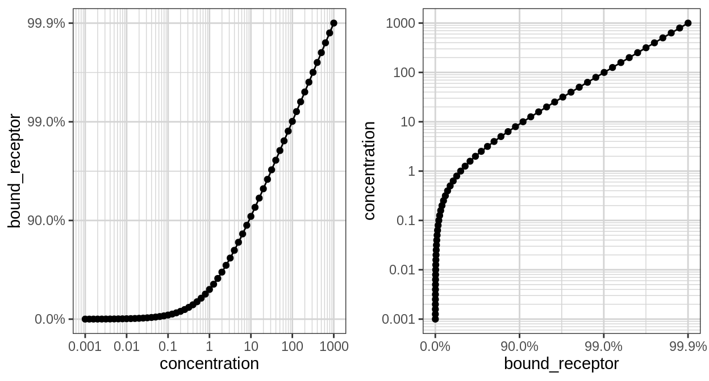
Nice scale for percent change data
This transform is useful for plotting percent change from baseline data. Percent change data can range from -100% to +Inf%, and depending on the range of the data, a linear scale can lose the desired resolution. This transform plots percent change data on a scale of log10(PCHG + 100%), similar to a log scale of ratio to baseline.
Nsubj <- 10
Doses <- c(0, 25, 50, 100, 200)
Ntot <- Nsubj*length(Doses)
times <- c(0,14,30,60,90)
dat1 <- data.frame(ID = 1:(Ntot),
DOSE = rep(Doses, Nsubj),
PD0 = rlnorm(Ntot, log(100), 1),
Kout = exp(rnorm(Ntot,-2, 0.3)),
Imax = 1,
ED50 = 25) %>%
dplyr::mutate(PDSS = PD0*(1 - Imax*DOSE/(DOSE + ED50))*exp(rnorm(Ntot, 0.05, 0.3)) ) %>%
merge(data.frame(ID = rep(1:(Ntot), each = length(times)), Time = times), by = "ID") %>%
dplyr::mutate(PD = ((PD0 - PDSS)*(exp(-Kout*Time)) + PDSS),
PCHG = (PD - PD0)/PD0)
ggplot2::ggplot(dat1 %>% subset(Time == 90),
ggplot2::aes(x = DOSE, y = PCHG, group = DOSE)) +
ggplot2::geom_boxplot() +
xgx_theme() +
xgx_scale_y_percentchangelog10() +
ylab("Percent Change from Baseline") +
xlab("Dose (mg)")
ggplot2::ggplot(dat1,
ggplot2::aes(x = Time, y = PCHG, group = ID, color = factor(DOSE))) +
ggplot2::geom_line() +
xgx_theme() +
xgx_scale_y_percentchangelog10() +
guides(color = guide_legend(title = "Dose (mg)")) +
ylab("Percent Change from Baseline")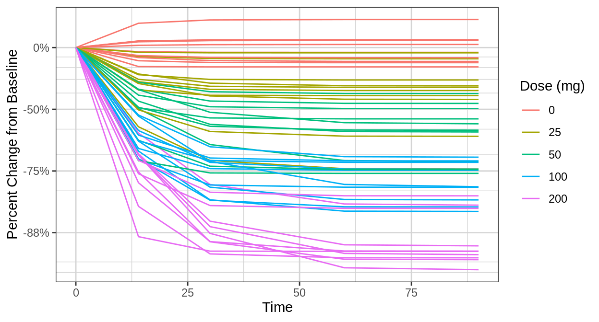
dat2 <- data.frame(ID = 1:(Ntot),
DOSE = rep(Doses, Nsubj),
PD0 = rlnorm(Ntot, log(100), 1),
Kout = exp(rnorm(Ntot,-2, 0.3)),
Emax = 50*rlnorm(Ntot, 0, 0.3),
ED50 = 300) %>%
dplyr::mutate(PDSS = PD0*(1 + Emax*DOSE/(DOSE + ED50))*exp(rnorm(Ntot, -1, 0.3)) ) %>%
merge(data.frame(ID = rep(1:(Ntot), each = length(times)), Time = times), by = "ID") %>%
dplyr::mutate(PD = ((PD0 - PDSS)*(exp(-Kout*Time)) + PDSS),
PCHG = (PD - PD0)/PD0)
ggplot2::ggplot(dat2, ggplot2::aes(x = DOSE, y = PCHG, group = DOSE)) +
ggplot2::geom_boxplot() +
xgx_theme() +
xgx_scale_y_percentchangelog10() +
ylab("Percent Change from Baseline") +
xlab("Dose (mg)")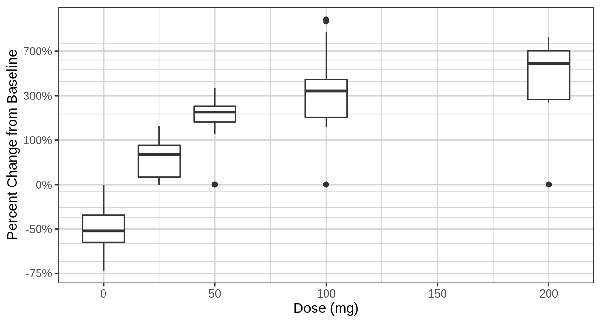
ggplot2::ggplot(dat2,
ggplot2::aes(x = Time, y = PCHG, group = ID, color = factor(DOSE))) +
ggplot2::geom_line() +
xgx_theme() +
xgx_scale_y_percentchangelog10() +
guides(color = guide_legend(title = "Dose (mg)")) +
ylab("Percent Change from Baseline")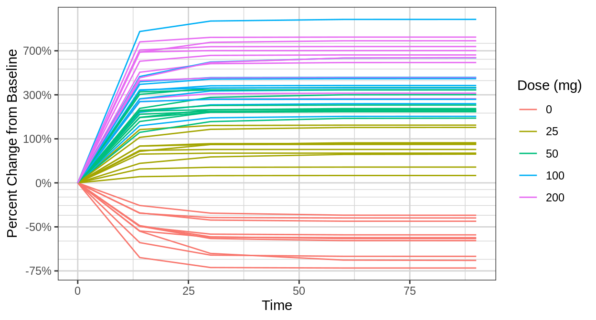
Scaling x-axis as a time scale
For time, it’s often good for the x ticks to be spaced in a particular way. For instance, for hours, subdividing in increments by 24, 12, 6, and 3 hours can make more sense than by 10 or 100. Similarly for days, increments of 7 or 28 days are preferred over 5 or 10 days. xgx_scale_x_time_units allows for this, where it is the input and output units.
data <- data.frame(x = 1:1000, y = stats::rnorm(1000))
g <- xgx_plot(data = data, aes(x = x, y = y)) +
geom_point()
g1 <- g + xgx_scale_x_time_units(units_dataset = "hours", units_plot = "hours")
g2 <- g + xgx_scale_x_time_units(units_dataset = "hours", units_plot = "days")
g3 <- g + xgx_scale_x_time_units(units_dataset = "hours", units_plot = "weeks")
g4 <- g + xgx_scale_x_time_units(units_dataset = "hours", units_plot = "months")
gridExtra::grid.arrange(g1, g2, g3, g4, nrow = 2)
Data checking
Numerical check
We’ve found that during exploration, it can be extremely important to check the dataset for issues. This can be done using the xgx_check_data or xgx_summarize_data function (the two functions are identical).
data <- mad_missing_duplicates %>%
filter(CMT %in% c(1, 2, 3)) %>%
rename(DV = LIDV,
YTYPE = CMT,
USUBJID = ID)
covariates <- c("WEIGHTB", "SEX")
check <- xgx_check_data(data, covariates)##
## DATA SUMMARY
## CONTINUOUS COVARIATES
## CATEGORICAL COVARIATES
## POSSIBLE DATA ISSUES - FIRST 6 RECORDS
## The following columns contained missing values
## DV:368knitr::kable(check$summary)| Category | Description | YTYPE | Statistic | Value |
|---|---|---|---|---|
| Patients | Number of Patients | - | 60 | 60 |
| MDV | Number of patients with zero PK or PD observations | all | 0 | 0 |
| MDV | Number of Missing Data Points (MDV==1 and EVID==0) | 1 | 0 | 0 |
| MDV | Number of Missing Data Points (MDV==1 and EVID==0) | 2 | 99 | 99 |
| MDV | Number of Missing Data Points (MDV==1 and EVID==0) | 3 | 0 | 0 |
| Dose | Number of non-zero doses | - | 300 | 300 |
| Dose | Number of zero doses (AMT==0) | - | 60 | 60 |
| Dose | Number of patients that never received drug | - | 10 | 10 |
| DV | Number of Data Points | 1 | 360 | 360 |
| DV | Number of Data Points | 2 | 1309 | 1309 |
| DV | Number of Data Points | 3 | 600 | 600 |
| DV | Number of Data Points per Individual | 1 | min = 6, median = 6, max = 6 | 6 |
| DV | Number of Data Points per Individual | 2 | min = 26, median = 26, max = 27 | 26 |
| DV | Number of Data Points per Individual | 3 | min = 10, median = 10, max = 10 | 10 |
| DV | Number of Data Points with zero value (DV==0) | 1 | 0 | 0 |
| DV | Number of Data Points with zero value (DV==0) | 2 | 0 | 0 |
| DV | Number of Data Points with zero value (DV==0) | 3 | 0 | 0 |
| DV | Number of Data Points with NA (is.na(DV)) | 1 | 0 | 0 |
| DV | Number of Data Points with NA (is.na(DV)) | 2 | 8 | 8 |
| DV | Number of Data Points with NA (is.na(DV)) | 3 | 0 | 0 |
| DV+TIME | Multiple measurements at same time | 1 | 0 | 0 |
| DV+TIME | Multiple measurements at same time | 2 | 32 | 32 |
| DV+TIME | Multiple measurements at same time | 3 | 0 | 0 |
| CENS | Number of Censored Data Points | 1 | 0 (0%) | 0 |
| CENS | Number of Censored Data Points | 2 | 9 (1%) | 9 |
| CENS | Number of Censored Data Points | 3 | 4 (1%) | 4 |
| All Columns | Negative Values (number) | - | DV:12 | 12 |
| All Columns | Missing Values (number) | - | DV:368 | 368 |
knitr::kable(head(check$data_subset))| Data_Check_Issue | ID | TIME | DV | CENS | YTYPE |
|---|---|---|---|---|---|
| is.na(DV) | 15 | 0.000 | NA | 0 | 2 |
| is.na(DV) | 21 | 127.858 | NA | 0 | 2 |
| is.na(DV) | 22 | 216.537 | NA | 0 | 2 |
| is.na(DV) | 40 | 156.563 | NA | 0 | 2 |
| is.na(DV) | 47 | 120.300 | NA | 0 | 2 |
| is.na(DV) | 50 | 71.814 | NA | 0 | 2 |
You can also get an overview of the covariates in the dataset with xgx_summarize_covariates. The covariate summaries are also provided in the xgx_check_data and xgx_summarize_data functions.
covar <- xgx_summarize_covariates(data,covariates)
knitr::kable(covar$cts_covariates)| Covariate | Nmissing | min | 25th | median | 75th | max |
|---|---|---|---|---|---|---|
| WEIGHTB | 0 | 52.8 | 69.2 | 78.9 | 89.85 | 109 |
knitr::kable(covar$cat_covariates)| Covariate | Nmissing | Ndistinct | Value (Count) |
|---|---|---|---|
| SEX | 0 | 2 | Female (30), Male (30) |
Functions - Exercises
Now that we have seen several examples of the xGx functions and how to use them, let’s test our abilities and understanding of these functions.
In these exercises, we will walk you through a few minimal, reproducible example (reprex)-like code snippets displaying the use of xGx functions.
Summary Statistic Plot Functions
Given the code snippet below, answer the following questions:
# Setup
gg <- ggplot(data = pk_data, aes(x = NOMTIME,
y = LIDV,
group = DOSE,
color = TRTACT_high2low)) + theme_bw()
# Relevant to Question
####
####
gg <- gg + stat_summary(geom = "errorbar",
width = 0.5,
size = 1,
fun.data = function(y){y <- stats::na.omit(y)
data.frame(y = mean(y),
ymin = mean(y) - qt(0.975, length(y)) * sqrt(stats::var(y)/length(y)),
ymax = mean(y) + qt(0.975, length(y)) * sqrt(stats::var(y)/length(y)))})
gg <- gg + stat_summary(geom = "point", size = 2, fun.y = mean)
gg <- gg + stat_summary(geom = "line", size = 1, fun.y = mean)
####
####Similarly, what xGx function can replace the following ggplot2 code?
gg <- gg + scale_y_log10(minor_breaks = (rep(seq(1,9), 21)) * 10^(rep(seq(-10,10),each=9)))Finally, can this code be replaced with an xGx function as well? - Which one?
gg <- gg + scale_x_continuous(breaks = seq(0,max(my.data$TIME/24)+1, 1))Now let’s try to produce a plot using these functions we just discussed.
# Setup
gg <- ggplot(data = pk_data, aes(x = NOMTIME,
y = LIDV,
group = DOSE,
color = TRTACT_high2low)) + theme_bw()
# What goes here?# Use the plotting functions from the previous questions# Setup
gg <- xgx_plot(data = pk_data, aes(x = NOMTIME,
y = LIDV,
group = DOSE,
color = TRTACT_high2low))
gg <- gg + xgx_geom_ci(conf_level = 0.95)
gg <- gg + xgx_scale_x_time_units()## Error in xgx_scale_x_time_units(): argument "units_dataset" is missing, with no defaultgg <- gg + xgx_scale_y_log10()
print(gg)## Warning: Removed 100 rows containing non-finite values (stat_summary).
## Warning: Removed 100 rows containing non-finite values (stat_summary).
## Warning: Removed 100 rows containing non-finite values (stat_summary).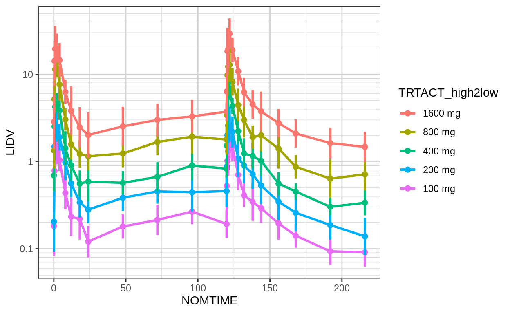
Annotations
Templates
Dose-PK/Exposure
Dose-PD/Efficacy/Safety
Template - Example
Overview
In this example, we will go through the steps of how to alter the xGx R-markdown templates provided within the xGx github in order to adhere to a new dataset of interest.
Here, we have chosen to view the data to answer questions about the continuous PD responses. Specifically, we will be following the PK/PD, Exposure-Response - Continuous Rmd template.
We will first prepare our R environment for a standard data analysis and load the dataset.
Setup
library(ggplot2)
library(dplyr)
library(tidyr)
library(gridExtra)
library(xgxr)
#flag for labeling figures as draft
status = "DRAFT"
## ggplot settings
xgx_theme_set()Load Dataset
pkpd_data <- read.csv("https://raw.githubusercontent.com/Novartis/xgxr/chase/data_create/raw/nonlinear_pkpd.csv")
DOSE_CMT = 1
PK_CMT = 5
PD_CMT = 4
SS_PROFDAY = 6 # steady state prof day
PD_PROFDAYS <- c(0, 2, 4, 6)
TAU = 24 # time between doses, units should match units of TIME, e.g. 24 for QD, 12 for BID, 7*24 for Q1W (when units of TIME are h)
#ensure dataset has all the necessary columns
pkpd_data = pkpd_data %>%
mutate(ID = ID, # ID column
TIME = TIM2, # TIME column name
NOMTIME = NT, # NOMINAL TIME column name
PROFDAY = 1 + floor(NT / 24), # PROFILE DAY day associated with profile,
# e.g. day of dose administration
LIDV = LIDV, # DEPENDENT VARIABLE column name
CENS = 0, # CENSORING column name
CMT = CMT, # COMPARTMENT column
DOSE = MGKG, # DOSE column here (numeric value)
TRTACT = TRT, # DOSE REGIMEN column here
# (character, with units),
LIDV_NORM = LIDV/MGKG,
LIDV_UNIT = UNIT,
DAY_label = ifelse(PROFDAY > 0, paste("Day", PROFDAY), "Baseline"),
SEX = 0,
WEIGHTB = 0
)
#create a factor for the treatment variable for plotting
pkpd_data = pkpd_data %>%
arrange(DOSE) %>%
mutate(TRTACT_low2high = factor(TRTACT, levels = unique(TRTACT)),
TRTACT_high2low = factor(TRTACT, levels = rev(unique(TRTACT))))You may notice that some of the columns have identical mappings, while others do not. Here, we have kept the same strucutre that is used within the xGx R-markdown script to indicate the column name mappings. However, our new dataset has column names that are different than the dataset from the dataset provided in the R-markdown on our xGx website
This figure describes what we have done, and the same process can be applied to any new dataset for which you may be intersted.
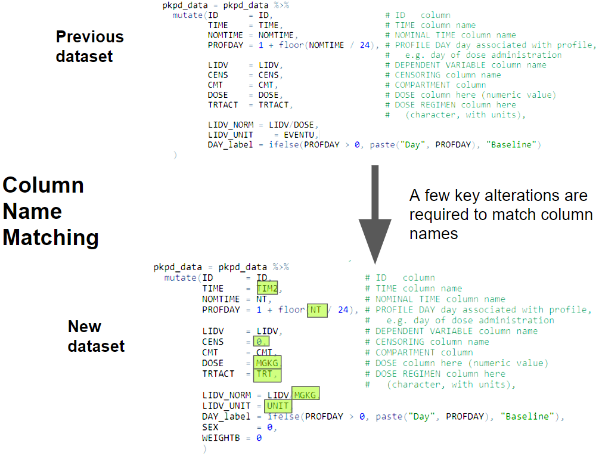
Splitting / reorganizing the data
Creating separate datasets will make plotting simpler, as we will typically only be interested in PK or PD data types.
#create pk and pd datasets
pk_data <- pkpd_data %>%
filter(CMT==PK_CMT)
pd_data <- pkpd_data %>%
filter(CMT==PD_CMT)
#create wide pkpd dataset for plotting PK vs PD
pkpd_data_wide <- pd_data %>%
select(ID, NOMTIME, PD = LIDV) %>%
right_join(pk_data) %>%
rename(CONC = LIDV)%>%
filter(!is.na(PD))%>%
filter(!is.na(CONC))Noncompartmental Analysis (NCA)
#perform NCA, for additional plots
NCA = pk_data %>%
group_by(ID, DOSE) %>%
filter(!is.na(LIDV)) %>%
summarize(AUC_0 = ifelse(length(LIDV[NOMTIME > 0 & NOMTIME <= TAU]) > 1,
caTools::trapz(TIME[NOMTIME > 0 & NOMTIME <= TAU],
LIDV[NOMTIME > 0 & NOMTIME <= TAU]),
NA),
Cmax_0 = ifelse(length(LIDV[NOMTIME > 0 & NOMTIME <= TAU]) > 1,
max(LIDV[NOMTIME > 0 & NOMTIME <= TAU]),
NA),
AUC_tau = ifelse(length(LIDV[NOMTIME > (SS_PROFDAY-1)*24 &
NOMTIME <= ((SS_PROFDAY-1)*24 + TAU)]) > 1,
caTools::trapz(TIME[NOMTIME > (SS_PROFDAY-1)*24 &
NOMTIME <= ((SS_PROFDAY-1)*24 + TAU)],
LIDV[NOMTIME > (SS_PROFDAY-1)*24 &
NOMTIME <= ((SS_PROFDAY-1)*24 + TAU)]),
NA),
Cmax_tau = ifelse(length(LIDV[NOMTIME > (SS_PROFDAY-1)*24 &
NOMTIME <= ((SS_PROFDAY-1)*24 + TAU)]) > 1,
max(LIDV[NOMTIME > (SS_PROFDAY-1)*24 &
NOMTIME <= ((SS_PROFDAY-1)*24 + TAU)]),
NA),
SEX = SEX[1], #this part just keeps the SEX and WEIGHTB covariates
WEIGHTB = WEIGHTB[1]) %>%
gather(PARAM, VALUE,-c(ID, DOSE, SEX, WEIGHTB)) %>%
ungroup() %>%
mutate(VALUE_NORM = VALUE/DOSE,
PROFDAY = ifelse(PARAM %in% c("AUC_0", "Cmax_0"), 1, SS_PROFDAY))
#add response data at day 1 and steady state to NCA for additional plots
NCA <- pd_data %>% subset(PROFDAY %in% c(1, SS_PROFDAY),) %>%
select(ID, PROFDAY, DAY_label, PD = LIDV, TRTACT_low2high, TRTACT_high2low) %>%
merge(NCA, by = c("ID","PROFDAY"))Units and labels
#units and labels
time_units_dataset = "hours"
time_units_plot = "days"
trtact_label = "Dose"
dose_units = unique((pkpd_data %>% filter(CMT == DOSE_CMT) )$LIDV_UNIT) %>% as.character()
dose_label = paste0("Dose (", dose_units, ")")
conc_units = unique(pk_data$LIDV_UNIT) %>% as.character()
conc_label = paste0("Concentration (", conc_units, ")")
concnorm_label = paste0("Normalized Concentration (", conc_units, ")/", dose_units)
AUC_units = paste0("h.", conc_units)
pd_units = unique(pd_data$LIDV_UNIT) %>% as.character()
pd_label = paste0("Continuous PD Marker (", pd_units, ")") Provide an overview of the data
Summarize the data in a way that is easy to visualize the general trend of PD over time and between doses. Using summary statistics can be helpful, e.g. Mean +/- SE, or median, 5th & 95th percentiles. Consider either coloring by dose or faceting by dose. Depending on the amount of data one graph may be better than the other.
PK and PD marker over time, colored by Dose, mean (95% CI) percentiles by nominal time
Observe the overall shape of the average profiles. Does the effect appear to increase and decrease quickly on a short time scale, or does is occur over a longer time scale? Do the PK and PD profiles appear to be on the same time scale, or does the PD seem delayed compared to the PK? Is there clear separation between the profiles for different doses? Does the effect appear to increase with increasing dose? Do you detect a saturation of the effect?
#PK data
gg <- ggplot(data = pk_data,
aes(x = NOMTIME,y = LIDV, color = TRTACT_high2low, fill = TRTACT_high2low))
gg <- gg + xgx_stat_ci(conf_level = .95)
gg <- gg + xgx_annotate_status(status)
gg <- gg + xgx_scale_x_time_units(units_dataset = time_units_dataset,
units_plot = time_units_plot)
gg <- gg + guides(color = guide_legend(""), fill = guide_legend(""))
gg <- gg + xgx_scale_y_log10()
gg <- gg + labs(y = conc_label)
print(gg)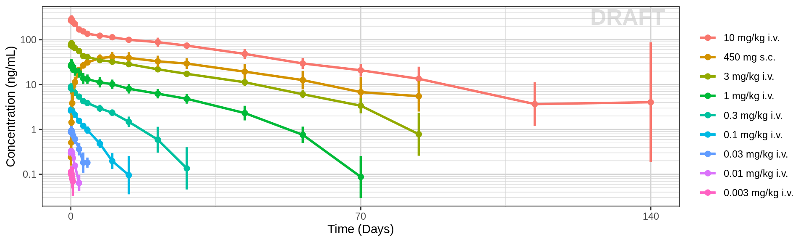
#PD data
gg %+% (data = pd_data) + scale_y_continuous() + labs(y = pd_label)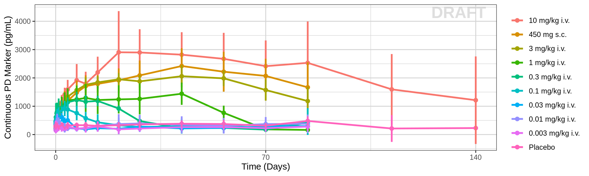
PK and PD marker over time, faceted by Dose, mean (95% CI) by nominal time
#PK data
gg <- ggplot(data = pk_data,
aes(x = NOMTIME,y = LIDV))
gg <- gg + xgx_stat_ci(conf_level = .95)
gg <- gg + xgx_scale_x_time_units(units_dataset = time_units_dataset,
units_plot = time_units_plot)
gg <- gg + guides(color = guide_legend(""),fill = guide_legend(""))
gg <- gg + facet_grid(~TRTACT_low2high)
gg <- gg + xgx_scale_y_log10()
gg <- gg + labs(y = conc_label)
print(gg)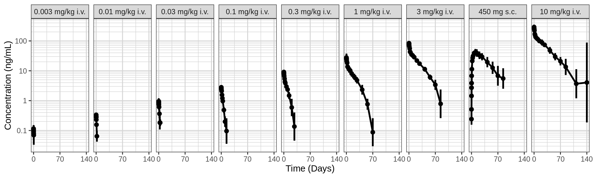
#PD data
gg %+% (data = pd_data %>% subset(DOSE>0)) + scale_y_continuous() + labs(y = pd_label)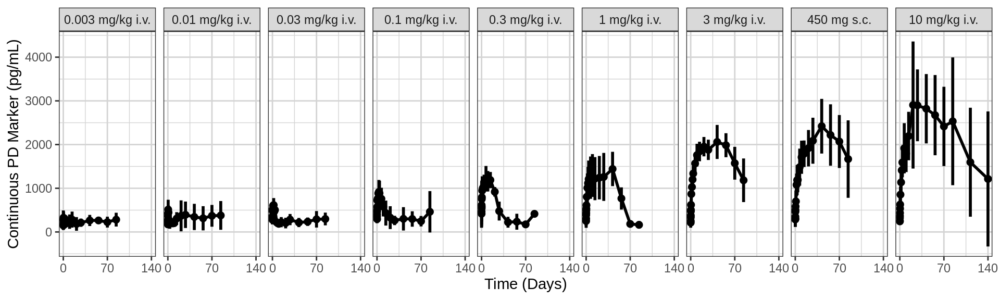
Explore variability
Use spaghetti plots to visualize the extent of variability between individuals. The wider the spread of the profiles, the higher the between subject variability. Distinguish different doses by color, or separate into different panels. If coloring by dose, do the individuals in the different dose groups overlap across doses? Dose there seem to be more variability at higher or lower concentrations?
PK and PD marker over time, colored by Dose, dots & lines grouped by individuals
#PK data
gg <- ggplot(data = pk_data,
aes(x = TIME, y = LIDV,group = ID, color = factor(TRTACT_high2low)))
gg <- gg + xgx_annotate_status(status)
gg <- gg + geom_line(alpha = 0.5)
gg <- gg + geom_point(alpha = 0.5)
gg <- gg + guides(color = guide_legend(""), fill = guide_legend(""))
gg <- gg + xgx_scale_x_time_units(units_dataset = time_units_dataset,
units_plot = time_units_plot)
gg <- gg + geom_point(data = pk_data %>% subset(CENS == 1,), color = "red", shape = 8,alpha = 0.5)
gg <- gg + xgx_scale_y_log10()
gg <- gg + labs(y = conc_label)
print(gg)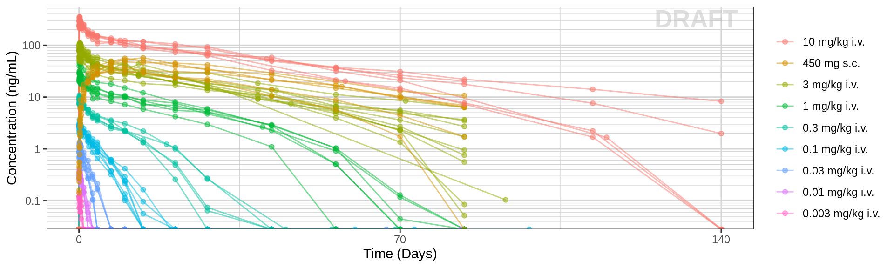
#PD data
gg %+% (data = pd_data %>% subset(DOSE>0)) + scale_y_continuous() + labs(y = pd_label)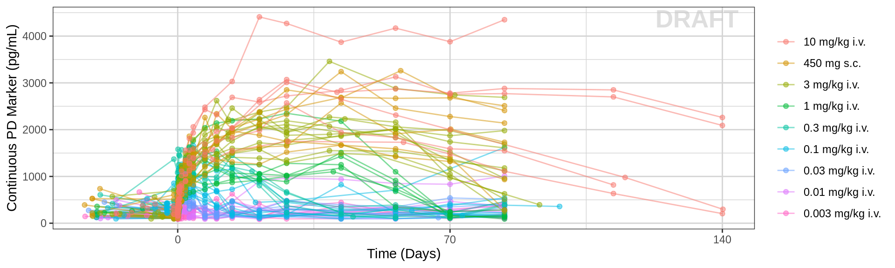
PK and PD marker over time, faceted by Dose, dots & lines grouped by individuals
#PK data
gg <- ggplot(data = pk_data, aes(x = TIME, y = LIDV, group = ID))
gg <- gg + xgx_annotate_status(status)
gg <- gg + geom_line(alpha = 0.5)
gg <- gg + geom_point(alpha = 0.5)
gg <- gg + guides(color = guide_legend(""), fill = guide_legend(""))
gg <- gg + xgx_scale_x_time_units(units_dataset = time_units_dataset,
units_plot = time_units_plot)
gg <- gg + facet_grid(~TRTACT_low2high)
gg <- gg + geom_point(data = pk_data %>% subset(CENS==1,), color="red", shape=8, alpha = 0.5)
gg <- gg + xgx_scale_y_log10()
gg <- gg + labs(y = conc_label)
print(gg)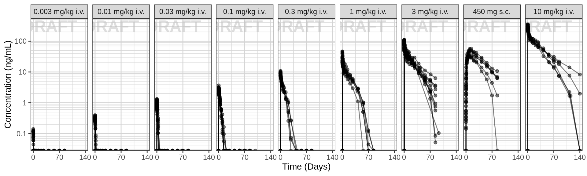
#PD data
gg %+% (data = pd_data %>% subset(DOSE>0)) + scale_y_continuous() + labs(y = pd_label)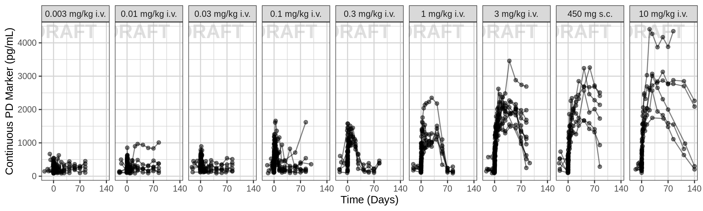
Explore Exposure-Response Relationship
Plot PD marker against concentration. Do you see any relationship? Does response increase (decrease) with increasing dose? Are you able to detect a plateau or emax (emin) on the effect?
Warning: Even if you don’t see an Emax, that doesn’t mean there isn’t one. Be very careful about using linear models for Dose-Response or Exposure-Response relationships. Extrapolation outside of the observed dose range could indicate a higher dose is always better (even if it isn’t).
gg <- ggplot(data = pkpd_data_wide %>% subset(PROFDAY == SS_PROFDAY,), aes(x = CONC,y = PD))
gg <- gg + xgx_annotate_status(status)
gg <- gg + geom_point(aes(color = TRTACT_high2low))
gg <- gg + geom_point(data = pkpd_data_wide %>% subset(CENS==1,), color="red", shape = 8)
gg <- gg + labs(x = conc_label , y = pd_label)
gg <- gg + xgx_scale_x_log10()
gg <- gg + guides(color = guide_legend(""))
print(gg)## Error in seq.default(from = best$lmin, to = best$lmax, by = best$lstep): 'from' must be of length 1data_to_plot <- pkpd_data_wide %>% subset(PROFDAY %in% PD_PROFDAYS,)
gg <- ggplot(data = data_to_plot,
aes(x = CONC, y = PD, color = TRTACT_high2low))
gg <- gg + xgx_annotate_status(status)
gg <- gg + geom_point()
gg <- gg + geom_point(data = data_to_plot %>% subset(CENS==1,), color="red", shape = 8)
gg <- gg + guides(color = guide_legend(""), fill = guide_legend(""))
gg <- gg + labs(x = conc_label , y = pd_label)
gg <- gg + xgx_scale_x_log10()
gg + facet_grid(~DAY_label)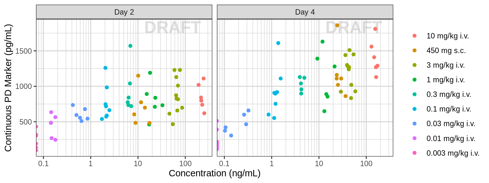
Plotting AUC vs response instead of concentration vs response may make more sense in some situations. For example, when there is a large delay between PK and PD it would be diffcult to relate the time-varying concentration with the response. If rich sampling is only done at a particular point in the study, e.g. at steady state, then the AUC calculated on the rich profile could be used as the exposure variable for a number of PD visits. If PK samples are scarce, average Cmin could also be used as the exposure metric.
NCA_plot = NCA %>%
group_by(PARAM) %>%
mutate(VALUE_QUART = cut(VALUE, quantile(VALUE, na.rm=TRUE), na.rm=TRUE, include.lowest = TRUE)) %>%
group_by(PARAM, VALUE_QUART) %>%
mutate(VALUE_MIDPOINT = median(VALUE))
gg <- ggplot(data = NCA_plot, aes(x = VALUE, y = PD))
gg <- gg + xgx_annotate_status(status)
gg <- gg + geom_point(aes(color = TRTACT_high2low)) + geom_smooth(color = "black")
gg <- gg + xgx_stat_ci(aes(x = VALUE_MIDPOINT, y = PD), geom = "errorbar")
gg <- gg + xgx_stat_ci(aes(x = VALUE_MIDPOINT, y = PD), geom = "point", shape = 0, size = 4)
gg <- gg + guides(color = guide_legend(""), fill = guide_legend(""))
gg <- gg + labs(color = trtact_label, x = "NCA parameter", y = pd_label)
gg <- gg + facet_wrap(~DAY_label + PARAM, scales = "free_x")
print(gg)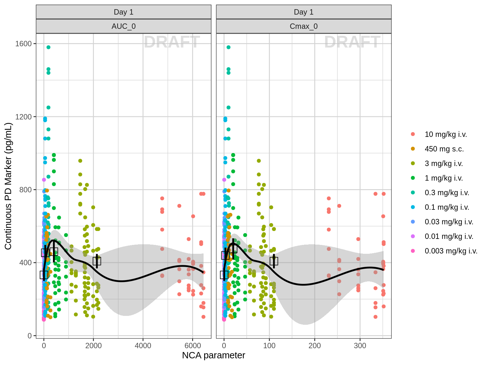
Explore covariate effects on Exposure-Response Relationship
Stratify exposure-response plots by covariates of interest to explore whether any key covariates impact response independent of exposure.
gg <- ggplot(data = NCA_plot, aes(x = VALUE, y = PD))
gg <- gg + xgx_annotate_status(status)
gg <- gg + geom_point(aes(color = SEX)) + geom_smooth(aes(color = SEX))
gg <- gg + guides(color = guide_legend(""), fill = guide_legend(""))
gg <- gg + labs(x = AUC_units , y = pd_label)
gg + facet_grid(.~DAY_label) 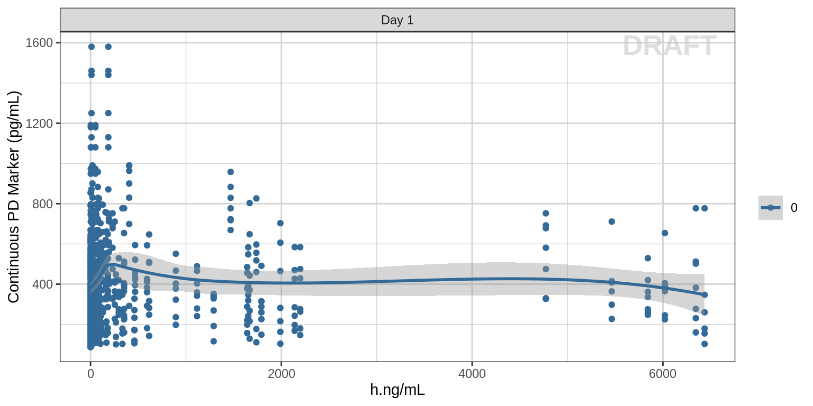
Individual response vs exposure hysteresis plots
Using geom_path you can create hysteresis plots of response vs exposure. Including details like arrows or colors can be helpful to indicate the direction of time.
If most of the arrows point up and to the right or down and to the left, this indicates a positive relationship between exposure and response (i.e. increasing exposure -> increasing response). Arrows pointing down and to the right or up and to the left indicate a negative relationship.
In a hysteresis plot, you want to determine whether the path is curving, and if so in what direction. If you detect a curve in the hysteresis plot, this indicates there is a delay between the exposure and the response. Normally, a clockwise turn indicates that increasing exposure is associated with (a delayed) increasing response, while a counter clockwise turn indicates increasing concentration gives (a delayed) decreasing response.
In the plots below, most of the hysteresis paths follow a counter clockwise turn, with most arrows pointing up and to the right or down and to the left, indicating the effect increases in a delayed manner with increasing concentration.
pkpd_data_wide <- pkpd_data_wide %>% arrange(ID, TIME)
gg <- ggplot(data = pkpd_data_wide, aes(x = CONC, y = PD, color = TIME))
gg <- gg + xgx_annotate_status(status)
gg <- gg + geom_path(arrow = arrow(length = unit(0.15,"cm")))
gg <- gg + labs(x = conc_label , y = pd_label)
gg <- gg + xgx_scale_x_log10()
gg <- gg + xgx_scale_y_log10()
gg <- gg + theme(panel.grid.minor.x = ggplot2::element_line(color = rgb(0.9,0.9,0.9)),
panel.grid.minor.y = ggplot2::element_line(color = rgb(0.9,0.9,0.9)))
gg + facet_wrap(~ID + TRTACT_low2high, ncol = 5)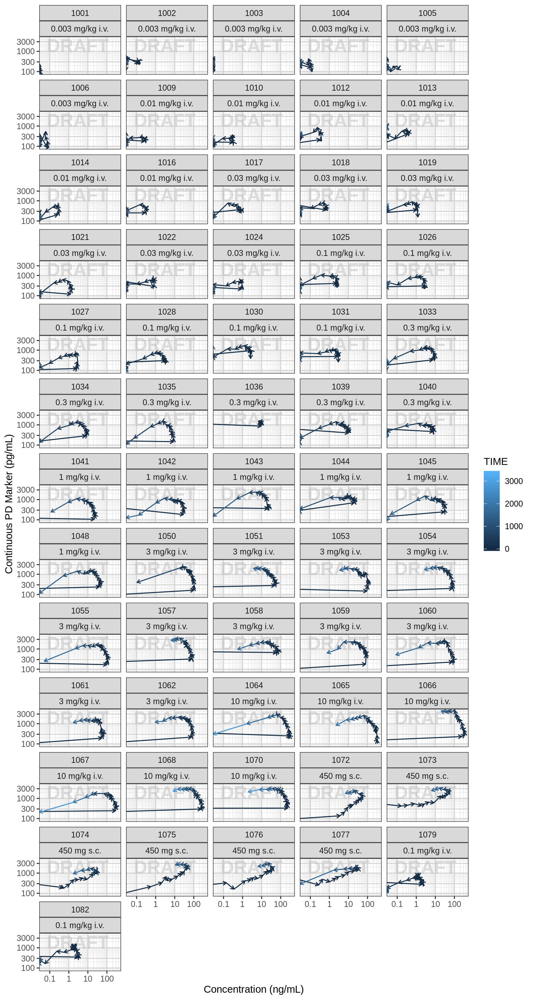
Templates - Exercises
In this first excercise, we would like to display the difference of theme between the xgx_theme() and the theme provided by ggplot2 within a simple time vs concentration plot.
Use a xgx_plot() function in place of the ggplot2::ggplot() function and notice the difference in output:
time <- rep(seq(1, 10), 5)
id <- sort(rep(seq(1, 5), 10))
conc <- exp(-time) * sort(rep(stats::rlnorm(5), 10))
data <- data.frame(time = time, concentration = conc, id = id)
gg <- ggplot2::ggplot(data = data,
mapping = ggplot2::aes(x = time, y = concentration, group = id)) +
ggplot2::geom_line() +
ggplot2::geom_point()
print(gg)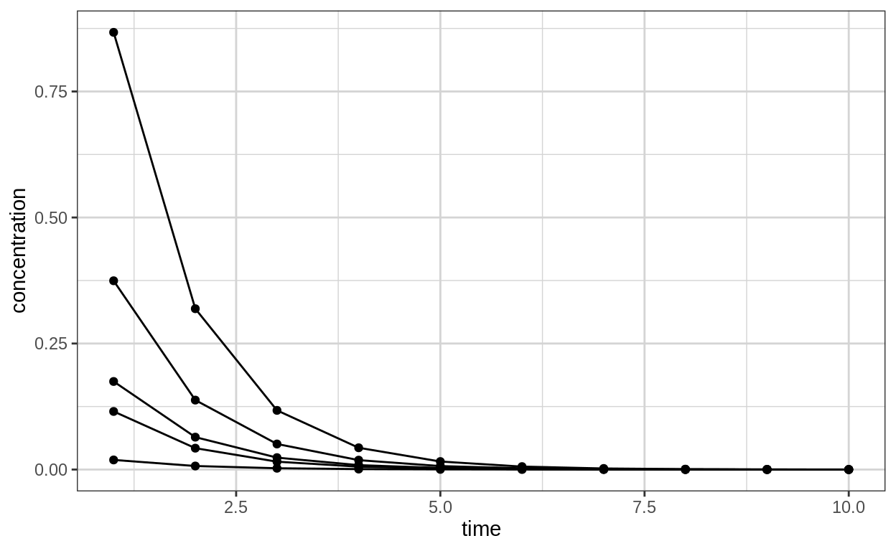
time <- rep(seq(1, 10), 5)
id <- sort(rep(seq(1, 5), 10))
conc <- exp(-time) * sort(rep(stats::rlnorm(5), 10))
data <- data.frame(time = time, concentration = conc, id = id)
gg <- xgx_plot(data = data,
mapping = ggplot2::aes(x = time, y = concentration, group = id)) +
ggplot2::geom_line() +
ggplot2::geom_point()
print(gg)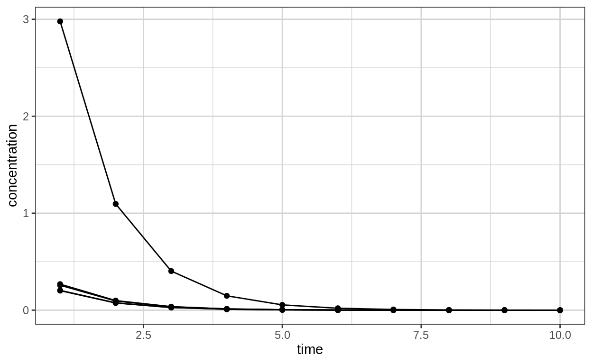
Overview plots
PK overview of concentration over time
Plot the concentration over time
gg <- ggplot(data = pk_data,
aes(x = NOMTIME,
y = LIDV))
print(gg)
Now adjust this plot to group and color by dose
pkpd_data_wide_d5 <- pkpd_data_wide %>% subset(PROFDAY==5,) %>% subset(CENS==0,)
# pkpd_data_wide_d5 <- pkpd_data_wide_d5 %>% subset(Severity_label != "Severe")
# Display Binned Observed Data and Model Confidence Intervals
gg <- ggplot(data = pkpd_data_wide_d5, aes(x=CONC, color = Severity_label))
gg <- gg + xgx_stat_ci(bins = 5,
distribution = "ordinal",
geom = c("errorbar", "point"))
gg <- gg + xgx_stat_smooth(aes(response = Severity_label, fill = Severity_label), method = "polr")
# Cleanup
gg <- gg + xgx_scale_x_log10()
gg <- gg + guides(color=guide_legend(""),fill=guide_legend(""))
gg <- gg + labs(x=pdseverity_label, y="Probability of being within each class")## Error in list2(..., title = title, subtitle = subtitle, caption = caption, : object 'pdseverity_label' not foundgg <- gg + xgx_annotate_status(status)
print(gg)## Error in FUN(X[[i]], ...): object 'Severity_label' not foundTemplates - AutoExplore Example
We have seen previously how to apply the previously constructed xGx Rmd templates to our own data.
In this example, we will learn how to automatically construct one of the R-markdown templates for our data using the xgx_autoexplore() function.
As we will see, the xgx_autoexplore() function makes process of analyzing our data take far fewer manual steps and is much more simple.
Defining Parameters
We first define the parameters according to our desired analysis. In order to reproduce the output from Section “Example 2 - Altering an xGx Template to New Data (Multiple Dose Continuous PKPD)”, we will choose our parameters to match this analysis template:
# Include the new xgx_autoexplore function in the environment
devtools::source_url("https://raw.githubusercontent.com/Novartis/xgxr/chase/R/xgx_auto_explore.R", echo=FALSE)## SHA-1 hash of file is 59331fd3d89b0d49f0b99dc12469962c2c84a992author_name = "Your Name Here"
# Do you want text explaining the figures?
show_explanation = FALSE
# Your path to the data goes here
data_path <- "https://raw.githubusercontent.com/Novartis/xgxr/master/data_create/raw/nonlinear_pkpd.csv"
# Change your column names (left) to the column names that
# have been standardized in the template (left)
mapping <- list(
"TIME" = "TIM2",
"NOMTIME" = "NT",
"EVID" = 0,
"CENS" = 0,
"DOSE" = "MGKG",
"TRTACT" = "TRT",
"LIDV_NORM" = "LIDV/MGKG",
"LIDV_UNIT" = "UNIT",
"PROFDAY" = 1,
"SEX" = 0,
"WEIGHTB" = 0)
# SAD PK Parameters specific to your dataset
pk_cmt = 5 # Pk Concentration
pd_cmt = 4 # PD Continuous
pd_data_type = "continuous"
dose_cmt = 1
steady_state_day = c(0, 6)
time_between_doses = 24
multiple_dosing = TRUENotice that we have defined the pk_cmt and pd_cmt here, as well as the multiple_dosing parameter as TRUE. This will tell the function to use the “Multiple Ascending Dose PKPD” template type.
In order to choose the “Continuous” template for MAD PKPD, we also define pd_data_type as "continuous".
Similar to how we altered the columns that are specific to our dataset, we have created a mapping from the columns of our dataset to the standardized xGx template columns.
Output of xgx_autoexplore()
We may then provide these parameters to the xgx_autoexplore() function, after which a folder will be created in the current working directory - “xgx_autoexplore_output”.
xgx_auto_explore(data_path = data_path,
mapping = mapping,
author_name = author_name,
pk_cmt = pk_cmt,
pd_cmt = pd_cmt,
dose_cmt = dose_cmt,
steady_state_day = steady_state_day,
time_between_doses = time_between_doses,
multiple_dosing = multiple_dosing,
pd_data_type = pd_data_type,
show_explanation = show_explanation)## Error in subset.default(., token == "expr"): object 'token' not found# Check that the correct Rmd template is retrieved
knitr::include_url("https://opensource.nibr.com/xgx/Multiple_Ascending_Dose_PKPD_continuous.html",
#"xgx_autoexplore_output/nonlinear_pkpd/Multiple_Ascending_Dose_PKPD_continuous/Multiple_Ascending_Dose_PKPD_continuous.html",
height = "600px")# knitr::include_graphics(".pdf")
# htmltools::includeHTMLThe main xgx_autoexplore directory (“xgx_autoexplore_output”) will have a hierarchical structure, with each new dataset having it’s own directory with the main xgx_autoexplore directory. Furthermore, within each dataset directory, each template applied to this dataset will get it’s own directory as well.
Templates - AutoExplore Exercise
Given the code example from the examples before, let’s go through some exercises to learn about how to alter this code to produce an xGx rmd template for SAD PK on this dataset.
Code from Templates - AutoExplore Example Section
# Include the new xgx_autoexplore function in the environment
devtools::source_url("https://raw.githubusercontent.com/Novartis/xgxr/chase/R/xgx_auto_explore.R", echo=FALSE)
author_name = "Your Name Here"
# Do you want text explaining the figures?
show_explanation = FALSE
# Your path to the data goes here
data_path <- "https://raw.githubusercontent.com/Novartis/xgxr/master/data_create/raw/nonlinear_pkpd.csv"
# Change your column names (left) to the column names that
# have been standardized in the template (left)
mapping <- list(
"TIME" = "TIM2",
"NOMTIME" = "NT",
"EVID" = 0,
"CENS" = 0,
"DOSE" = "MGKG",
"TRTACT" = "TRT",
"LIDV_NORM" = "LIDV/MGKG",
"LIDV_UNIT" = "UNIT",
"PROFDAY" = 1,
"SEX" = 0,
"WEIGHTB" = 0)
# SAD PK Parameters specific to your dataset
pk_cmt = 5 # Pk Concentration
pd_cmt = 4 # PD Continuous
pd_data_type = "continuous"
dose_cmt = 1
steady_state_day = c(0, 6)
time_between_doses = 24
multiple_dosing = TRUE
xgx_auto_explore(data_path = data_path,
mapping = mapping,
author_name = author_name,
pk_cmt = pk_cmt,
pd_cmt = pd_cmt,
dose_cmt = dose_cmt,
steady_state_day = steady_state_day,
time_between_doses = time_between_doses,
multiple_dosing = multiple_dosing,
pd_data_type = pd_data_type,
show_explanation = show_explanation)Performing a Single Ascending Dose Pharmacokinetics Analysis
Probability of Severe Response
Let’s say that we have a dataset in our home directory, ~/my_pkpd_dataset.csv, which contains categorical responses for an individual’s severity of response for each time point, drug concentration, and treatment dosage. The PD ordinal response is held within compartment = 3, while PK data is within compartment = 1 for this dataset. The compartment column name is “COMPNT”.